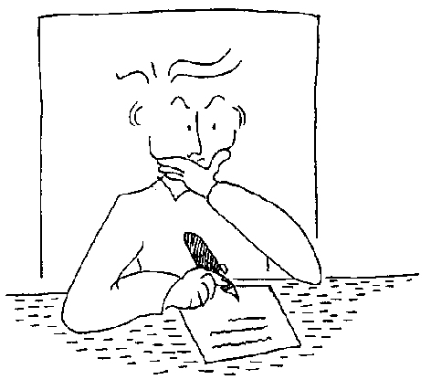
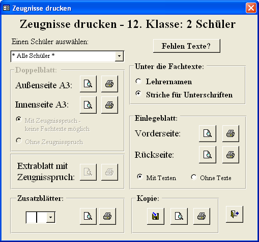
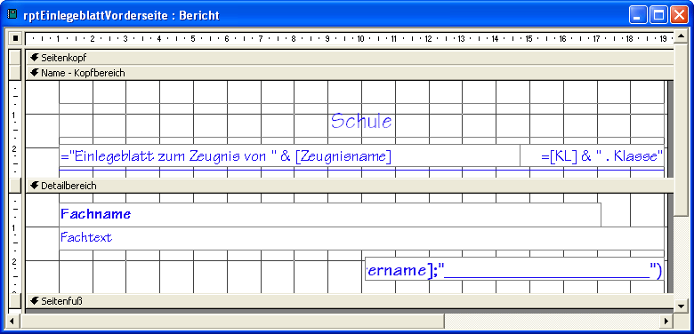
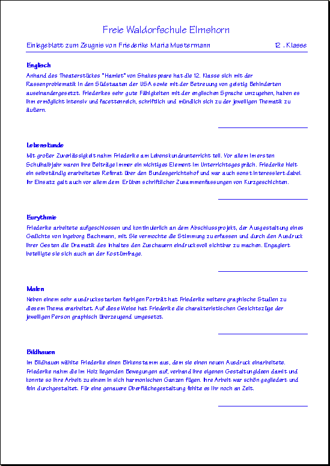
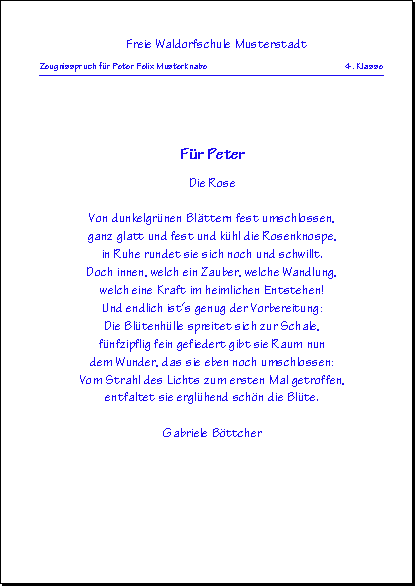
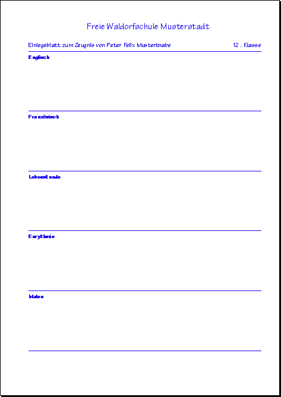
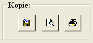

|
Texel-Hilfe

Einleitung
Beispiele
Überblick
Installation
Organisation
Einstellungen
Schülerdaten
Layout
Dateivorlagen
Schreiben
Einlesen
Korrigieren
Ausdrucken
Lückentexteditor
Kontakt
|
Eine Zeugnisverwaltung für Waldorfschulen
Nach dem Korrigieren können die Zeugnisse endlich gedruckt werden.

Vorbereitungen
Ausdrucken der Zeugnisse
Seitenentwurf anpassen
Zeugnissprüche
Leere Einlegeblätter
Zeugniskopien
Vorbereitungen
Um die A3-Doppelbögen zu drucken benötigen Sie selbstverständlich einen A3-Drucker. Um die Zeugnisse farbig zu drucken reicht ein einfacher A3-Tintenstrahldrucker. Die A4-Einlege- und Zusatzblätter können mit jedem schnelleren Tintenstrahldrucker ausgedruckt werden. Um mehrere Klassen in ausreichend kurzer Zeit, nämlich zwischen der Zeugniskonferenz und dem Austeilen der Zeugnisse zu drucken, empfehlen sich schnellere Drucker. In Elmshorn haben wir die Zeugnisse für 9 Klassen auf 2 Druckern gedruckt. Es empfieht sich aber 3 Drucker zur Verfügung zu haben. Oft ist es auch möglich, die Außenbögen, die ja keine Fachtexte besitzen schon vorher zu drucken, auch fertige Klassenlehrerzeignisse können oft schon vorher gedruckt werden.
Die Zeugnisseiten sind organisiert als Access-Berichte. Die Daten und Texte werden in Tabellenabfragen bereitgestellt und in einem vorgegebenen Seitenentwurf ausgedruckt. Unten ist beschrieben, wie Sie den Entwurf anpassen können.
Werden ganze Klassensätze einer Zeugnisseite gedruckt, werden die Vorder- und die Rückseite in verschiedener Reihenfolge gedruckt. Die Zeugnisse brauchen also nicht umsortiert werden. Nach dem Druck einer Seite, braucht der Stapel nur so wie er ist wieder in den Papierschacht gelegt zu werden.
Eine Vorschau der Zeugnisseiten erhält man in Access nur, wenn ein Druckertreiber installiert ist. Um die A3-Doppelblätter in der Vorschau zu sehen, installieren sie einfach den Treiber eines A3-Druckers, den Drucker selbst benötöigen Sie dazu nicht. Im Download-Paket ist der Treiber des Druckers HP Inkjet 2600 für Windows 2000 und Windows XP enthalten. Eine Anleitung zur Installation finden Sie in dieser Hilfe.
Nach dem Aufruf der Vorschau einer A3-Zeugnisseite über die Schaltfläche Vorschau auf dem Texel-Druckformular: müssen sie noch für diese Zeugnisseite den Drucker einrichten, bevor Sie die Vorschau richtig sehen. Rufen Sie im Menue Datei den Punkt Seite einrichten auf, dann das Blatt Seite, spezieller Drucker, die Schaltfläche Drucker, wählen sie dann z.B. den HP 2600 aus, Eigenschaften, Papiergröße A3 und unter Grundlagen die Option Querformat.
Später kann es sein, dass Sie nur einen Teil des Klassensatzes drucken wollen, z. B. wenn das der Seitenentwurf nur für einen Teil passen ist. Dazu rufen Sie den Menuepunkt Datei-Drucken auf und geben die zu druckenden Seiten dort ein.
Inhalt
Ausdrucken der Zeugnisse
Nach dem Aufruf des Druckfomulars wählen sie zunächst alle Schüler oder den Schüler aus, dessen Zeugnisse Sie drucken wollen. Über die Schlaltfläche Fehlen Texte? erfahren sie ob Fachtexte, die im Layout eingetragen wurden, noch nicht eingelesen wurden, und ob alle Texte, die eingelesen wurden auch im Layout eingetragen sind. Die Nummern von Zusatzblättern erscheinen nur, wenn für den ausgewählten Schüler auch Texte dafür vorliegen. Stellen sie auch ein, ob Striche für die Lehrerunterschriften oder der Lehrername unter die Texte gedruckt werden soll. Für die Zeugnisse, die den Schülern ausgehändigt werden, sind die Striche gedacht, für spätere Kopien eignet sich das Ausdrucken der Lehrernamen.
Es empfielt sich vor dem Ausdrucken erst eine Vorschau über die jeweiligen Schaltflächen Vorschau: einzusehen. Sollten die Texte nicht auf die Seite passen, gibt es zwei Möglichkeiten. Entweder Sie verschieben Fächer von dieser Seite auf andere Seiten, in dem sie im Layout die Zuordnungen ändern, oder Sie verändern den Seitenentwurf.
Nach dem Drucken schließen Sie die Vorschau über das rote Kreuzchen oben rechts am Fenster. Die Druckereinstellungen können dabei gespeichert werden.
Inhalt
Seitenentwurf anpassen
Ist nur wenig Text auf der Seite zu viel, können Sie aber auch den Seitenentwurf dieses Access-Berichtes geringfügig ändern: Dazu wählen sie zunächst die Vorschau der Seite und rufen vor dem Ausdrucken in der Access-Menueleiste den Befehl Ansicht-Entwurfsansicht oder kurz die Schaltfläche auf.
Ein Zeugnisseite in der Entwurfsansicht:

Die Texte, die in der Tabelle gespeichert sind, werden in den dargestellten Textfeldern ausgegeben. Verbreitern sie nicht den karierten Hintergrund, sonst erhalten Sie Leerseiten zwischen den Zeugnisseiten.
Im Kopfbereich wird die Schule und der Schülername augezeigt hier können sie Platz sparen, in dem Sie die einzelnen Textfelder verschieben, und den gesamten Kopfbereich durch verschieben des grauen Balkens unterhalb des Bereichs verkleinern.
Im Detailbereich ist der Entwurf für den Abschnitt mit einem Fachtext. Dieser Bereich wird für jeden Text der Seite wiederholt. Hier können Sie Platz sparen, indem Sie die Textfelder zusammenschieben und den grauen Balken unterhalb des Bereichs nach oben ziehen. Eine drastische Maßnahme ist, das Textfeld für den Fachtext doppelt anzuklicken und im Eigenschaftenfenster unter Format die Schriftgröße zu verkleinern.
Genauere Informationen zu Access-Berichten (Reports) finden Sie in der Access-Hilfe oder in der Fachliteratur
Ein fertiges Einlegeblatt:

Zeugnissprüche
Für die Klassen 1 bis 7 können Sie auswählen, ob der Zeugnisspruch unter den Klassenlehrertext auf die Innenseite des Doppelblattes gedruckt werden soll. Dann sind neben dem Klassenlehrerzeugnis aber keine weiteren Fachtexte mehr möglich, auch wenn Sie im Layout eingetragen sind.
Außerdem können Extrablätter gedruckt werden, die nur den Zeugnisspruch enthalten.
Ein Extrablatt mit dem Zeugnisspruch:

Inhalt
Leere Einlegeblätter
Sollten die Fachlehrer im Gegensatz zum Klassenlehrer oder den Epochenlehrern noch mit der Hand schreiben wollen, können sie leere Einlegeblätter ausdrucken, um ein einheitliches Layout zu gewährleisten. Die Fächer legen Sie auch im Layout fest. Hier können die Kollegen dann per Hand eintragen.
Ein leeres Einlegeblatt:

Inhalt
Zeugniskopien

Da die Zeugnisse viele Jahre lang archiviert werden müssen, besteht über die Schaltfläche Kopien speichern die Möglichkeit die gesamten Zeugnistexte als einfache Textdateien mit der Endung .txt zu speichern, in der Hoffnung, dass diese Dateien auch in 40 Jahren noch lesbar sind. Für jeden Schüler wird eine eigene Datei erstellt. Sind alle Schüler ausgewählt, wird ein neuer Ordner für die Dateien erstellt.
Zum Korrektur lesen oder für die Archivierung auf Papier lassen sich Kladdeausdrucke in schwarzer Schrift auf durchnummerierten A4-Blättern herstellen. Ein Beispiel finden Sie auf der Seite Korrigieren.
Inhalt
|